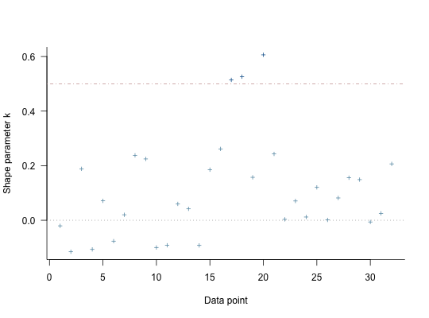

For models fit using MCMC, compute approximate leave-one-out cross-validation
(LOO, LOOIC) or, less preferably, the Widely Applicable Information Criterion
(WAIC) using the loo package. Exact \(K\)-fold
cross-validation is also available. Compare two or more models using the
compare_models function. Note: these functions are not
guaranteed to work properly unless the data argument was specified
when the model was fit.
# S3 method for stanreg loo(x, ..., k_threshold = NULL) # S3 method for stanreg waic(x, ...) kfold(x, K = 10, save_fits = FALSE) compare_models(..., loos = list())
| x | A fitted model object returned by one of the
rstanarm modeling functions. See |
|---|---|
| ... | For the |
| k_threshold | Threshold for flagging estimates of the Pareto shape
parameters \(k\) estimated by |
| K | For |
| save_fits | If |
| loos | For |
The loo and waic methods return an object of class
'loo'. See the Value section in loo and
waic (from the loo package) for details on the
structure of these objects.
kfold returns an object with has classes 'kfold' and 'loo'
that has a similar structure as the objects returned by the loo and
waic methods.
compare_models returns a vector or matrix with class
'compare.loo'. See the Comparing models section below for more
details.
The loo method for stanreg objects
provides an interface to the loo package for
approximate leave-one-out cross-validation (LOO). The LOO Information
Criterion (LOOIC) has the same purpose as the Akaike Information Criterion
(AIC) that is used by frequentists. Both are intended to estimate the
expected log predictive density (ELPD) for a new dataset. However, the AIC
ignores priors and assumes that the posterior distribution is multivariate
normal, whereas the functions from the loo package do not make this
distributional assumption and integrate over uncertainty in the parameters.
This only assumes that any one observation can be omitted without having a
major effect on the posterior distribution, which can be judged using the
diagnostic plot provided by the plot.loo method and the
warnings provided by the print.loo method (see the
How to Use the rstanarm Package vignette for an example of this
process).
loo gives warnings (k_threshold)k_threshold argument to the loo method for rstanarm
models is provided as a possible remedy when the diagnostics reveal
problems stemming from the posterior's sensitivity to particular
observations. Warnings about Pareto \(k\) estimates indicate observations
for which the approximation to LOO is problematic (this is described in
detail in Vehtari, Gelman, and Gabry (2017) and the
loo package documentation). The
k_threshold argument can be used to set the \(k\) value above
which an observation is flagged. If k_threshold is not NULL
and there are \(J\) observations with \(k\) estimates above
k_threshold then when loo is called it will refit the
original model \(J\) times, each time leaving out one of the \(J\)
problematic observations. The pointwise contributions of these observations
to the total ELPD are then computed directly and substituted for the
previous estimates from these \(J\) observations that are stored in the
object created by loo.
Note: in the warning messages issued by loo about large
Pareto \(k\) estimates we recommend setting k_threshold to at
least \(0.7\). There is a theoretical reason, explained in Vehtari,
Gelman, and Gabry (2017), for setting the threshold to the stricter value
of \(0.5\), but in practice they find that errors in the LOO
approximation start to increase non-negligibly when \(k > 0.7\).
The kfold function performs exact \(K\)-fold
cross-validation. First the data are randomly partitioned into \(K\)
subsets of equal (or as close to equal as possible) size. Then the model is
refit \(K\) times, each time leaving out one of the K subsets. If
\(K\) is equal to the total number of observations in the data then
\(K\)-fold cross-validation is equivalent to exact leave-one-out
cross-validation (to which loo is an efficient approximation). The
compare_models function is also compatible with the objects returned
by kfold.
compare_models is a wrapper around the
compare function in the loo package. Before
calling compare, compare_models performs some extra checks to
make sure the rstanarm models are suitable for comparison. These
extra checks include verifying that all models to be compared were fit
using the same outcome variable and likelihood family.
If exactly two models are being compared then compare_models returns
a vector containing the difference in expected log predictive density
(ELPD) between the models and the standard error of that difference (the
documentation for compare has additional details about
the calculation of the standard error of the difference). The difference in
ELPD will be negative if the expected out-of-sample predictive accuracy of
the first model is higher. If the difference is be positive then the second
model is preferred.
If more than two models are being compared then compare_models
returns a matrix with one row per model. This matrix summarizes the objects
and arranges them in descending order according to expected out-of-sample
predictive accuracy. That is, the first row of the matrix will be
for the model with the largest ELPD (smallest LOOIC).
Vehtari, A., Gelman, A., and Gabry, J. (2017). Practical Bayesian model evaluation using leave-one-out cross-validation and WAIC. Statistics and Computing. 27(5), 1413--1432. doi:10.1007/s11222-016-9696-4. arXiv preprint: http://arxiv.org/abs/1507.04544/
The various rstanarm vignettes for more examples of
using loo and compare_models.
loo-package (in particular the PSIS-LOO
section) for details on the computations implemented by the loo
package and the interpretation of the Pareto \(k\) estimates displayed
when using the plot.loo method.
log_lik.stanreg to directly access the pointwise
log-likelihood matrix.
#>#> #> SAMPLING FOR MODEL 'continuous' NOW (CHAIN 1). #> #> Gradient evaluation took 2e-05 seconds #> 1000 transitions using 10 leapfrog steps per transition would take 0.2 seconds. #> Adjust your expectations accordingly! #> #> #> Iteration: 1 / 2000 [ 0%] (Warmup) #> Iteration: 200 / 2000 [ 10%] (Warmup) #> Iteration: 400 / 2000 [ 20%] (Warmup) #> Iteration: 600 / 2000 [ 30%] (Warmup) #> Iteration: 800 / 2000 [ 40%] (Warmup) #> Iteration: 1000 / 2000 [ 50%] (Warmup) #> Iteration: 1001 / 2000 [ 50%] (Sampling) #> Iteration: 1200 / 2000 [ 60%] (Sampling) #> Iteration: 1400 / 2000 [ 70%] (Sampling) #> Iteration: 1600 / 2000 [ 80%] (Sampling) #> Iteration: 1800 / 2000 [ 90%] (Sampling) #> Iteration: 2000 / 2000 [100%] (Sampling) #> #> Elapsed Time: 0.057294 seconds (Warm-up) #> 0.054536 seconds (Sampling) #> 0.11183 seconds (Total) #> #> #> SAMPLING FOR MODEL 'continuous' NOW (CHAIN 2). #> #> Gradient evaluation took 1.3e-05 seconds #> 1000 transitions using 10 leapfrog steps per transition would take 0.13 seconds. #> Adjust your expectations accordingly! #> #> #> Iteration: 1 / 2000 [ 0%] (Warmup) #> Iteration: 200 / 2000 [ 10%] (Warmup) #> Iteration: 400 / 2000 [ 20%] (Warmup) #> Iteration: 600 / 2000 [ 30%] (Warmup) #> Iteration: 800 / 2000 [ 40%] (Warmup) #> Iteration: 1000 / 2000 [ 50%] (Warmup) #> Iteration: 1001 / 2000 [ 50%] (Sampling) #> Iteration: 1200 / 2000 [ 60%] (Sampling) #> Iteration: 1400 / 2000 [ 70%] (Sampling) #> Iteration: 1600 / 2000 [ 80%] (Sampling) #> Iteration: 1800 / 2000 [ 90%] (Sampling) #> Iteration: 2000 / 2000 [100%] (Sampling) #> #> Elapsed Time: 0.048153 seconds (Warm-up) #> 0.048867 seconds (Sampling) #> 0.09702 seconds (Total) #> #> #> SAMPLING FOR MODEL 'continuous' NOW (CHAIN 3). #> #> Gradient evaluation took 6.2e-05 seconds #> 1000 transitions using 10 leapfrog steps per transition would take 0.62 seconds. #> Adjust your expectations accordingly! #> #> #> Iteration: 1 / 2000 [ 0%] (Warmup) #> Iteration: 200 / 2000 [ 10%] (Warmup) #> Iteration: 400 / 2000 [ 20%] (Warmup) #> Iteration: 600 / 2000 [ 30%] (Warmup) #> Iteration: 800 / 2000 [ 40%] (Warmup) #> Iteration: 1000 / 2000 [ 50%] (Warmup) #> Iteration: 1001 / 2000 [ 50%] (Sampling) #> Iteration: 1200 / 2000 [ 60%] (Sampling) #> Iteration: 1400 / 2000 [ 70%] (Sampling) #> Iteration: 1600 / 2000 [ 80%] (Sampling) #> Iteration: 1800 / 2000 [ 90%] (Sampling) #> Iteration: 2000 / 2000 [100%] (Sampling) #> #> Elapsed Time: 0.058356 seconds (Warm-up) #> 0.050894 seconds (Sampling) #> 0.10925 seconds (Total) #> #> #> SAMPLING FOR MODEL 'continuous' NOW (CHAIN 4). #> #> Gradient evaluation took 1.4e-05 seconds #> 1000 transitions using 10 leapfrog steps per transition would take 0.14 seconds. #> Adjust your expectations accordingly! #> #> #> Iteration: 1 / 2000 [ 0%] (Warmup) #> Iteration: 200 / 2000 [ 10%] (Warmup) #> Iteration: 400 / 2000 [ 20%] (Warmup) #> Iteration: 600 / 2000 [ 30%] (Warmup) #> Iteration: 800 / 2000 [ 40%] (Warmup) #> Iteration: 1000 / 2000 [ 50%] (Warmup) #> Iteration: 1001 / 2000 [ 50%] (Sampling) #> Iteration: 1200 / 2000 [ 60%] (Sampling) #> Iteration: 1400 / 2000 [ 70%] (Sampling) #> Iteration: 1600 / 2000 [ 80%] (Sampling) #> Iteration: 1800 / 2000 [ 90%] (Sampling) #> Iteration: 2000 / 2000 [100%] (Sampling) #> #> Elapsed Time: 0.055578 seconds (Warm-up) #> 0.057168 seconds (Sampling) #> 0.112746 seconds (Total) #>#>#> #> SAMPLING FOR MODEL 'continuous' NOW (CHAIN 1). #> #> Gradient evaluation took 2.1e-05 seconds #> 1000 transitions using 10 leapfrog steps per transition would take 0.21 seconds. #> Adjust your expectations accordingly! #> #> #> Iteration: 1 / 2000 [ 0%] (Warmup) #> Iteration: 200 / 2000 [ 10%] (Warmup) #> Iteration: 400 / 2000 [ 20%] (Warmup) #> Iteration: 600 / 2000 [ 30%] (Warmup) #> Iteration: 800 / 2000 [ 40%] (Warmup) #> Iteration: 1000 / 2000 [ 50%] (Warmup) #> Iteration: 1001 / 2000 [ 50%] (Sampling) #> Iteration: 1200 / 2000 [ 60%] (Sampling) #> Iteration: 1400 / 2000 [ 70%] (Sampling) #> Iteration: 1600 / 2000 [ 80%] (Sampling) #> Iteration: 1800 / 2000 [ 90%] (Sampling) #> Iteration: 2000 / 2000 [100%] (Sampling) #> #> Elapsed Time: 0.101569 seconds (Warm-up) #> 0.079627 seconds (Sampling) #> 0.181196 seconds (Total) #> #> #> SAMPLING FOR MODEL 'continuous' NOW (CHAIN 2). #> #> Gradient evaluation took 2.2e-05 seconds #> 1000 transitions using 10 leapfrog steps per transition would take 0.22 seconds. #> Adjust your expectations accordingly! #> #> #> Iteration: 1 / 2000 [ 0%] (Warmup) #> Iteration: 200 / 2000 [ 10%] (Warmup) #> Iteration: 400 / 2000 [ 20%] (Warmup) #> Iteration: 600 / 2000 [ 30%] (Warmup) #> Iteration: 800 / 2000 [ 40%] (Warmup) #> Iteration: 1000 / 2000 [ 50%] (Warmup) #> Iteration: 1001 / 2000 [ 50%] (Sampling) #> Iteration: 1200 / 2000 [ 60%] (Sampling) #> Iteration: 1400 / 2000 [ 70%] (Sampling) #> Iteration: 1600 / 2000 [ 80%] (Sampling) #> Iteration: 1800 / 2000 [ 90%] (Sampling) #> Iteration: 2000 / 2000 [100%] (Sampling) #> #> Elapsed Time: 0.104045 seconds (Warm-up) #> 0.075794 seconds (Sampling) #> 0.179839 seconds (Total) #> #> #> SAMPLING FOR MODEL 'continuous' NOW (CHAIN 3). #> #> Gradient evaluation took 1.4e-05 seconds #> 1000 transitions using 10 leapfrog steps per transition would take 0.14 seconds. #> Adjust your expectations accordingly! #> #> #> Iteration: 1 / 2000 [ 0%] (Warmup) #> Iteration: 200 / 2000 [ 10%] (Warmup) #> Iteration: 400 / 2000 [ 20%] (Warmup) #> Iteration: 600 / 2000 [ 30%] (Warmup) #> Iteration: 800 / 2000 [ 40%] (Warmup) #> Iteration: 1000 / 2000 [ 50%] (Warmup) #> Iteration: 1001 / 2000 [ 50%] (Sampling) #> Iteration: 1200 / 2000 [ 60%] (Sampling) #> Iteration: 1400 / 2000 [ 70%] (Sampling) #> Iteration: 1600 / 2000 [ 80%] (Sampling) #> Iteration: 1800 / 2000 [ 90%] (Sampling) #> Iteration: 2000 / 2000 [100%] (Sampling) #> #> Elapsed Time: 0.083128 seconds (Warm-up) #> 0.076572 seconds (Sampling) #> 0.1597 seconds (Total) #> #> #> SAMPLING FOR MODEL 'continuous' NOW (CHAIN 4). #> #> Gradient evaluation took 1.5e-05 seconds #> 1000 transitions using 10 leapfrog steps per transition would take 0.15 seconds. #> Adjust your expectations accordingly! #> #> #> Iteration: 1 / 2000 [ 0%] (Warmup) #> Iteration: 200 / 2000 [ 10%] (Warmup) #> Iteration: 400 / 2000 [ 20%] (Warmup) #> Iteration: 600 / 2000 [ 30%] (Warmup) #> Iteration: 800 / 2000 [ 40%] (Warmup) #> Iteration: 1000 / 2000 [ 50%] (Warmup) #> Iteration: 1001 / 2000 [ 50%] (Sampling) #> Iteration: 1200 / 2000 [ 60%] (Sampling) #> Iteration: 1400 / 2000 [ 70%] (Sampling) #> Iteration: 1600 / 2000 [ 80%] (Sampling) #> Iteration: 1800 / 2000 [ 90%] (Sampling) #> Iteration: 2000 / 2000 [100%] (Sampling) #> #> Elapsed Time: 0.082594 seconds (Warm-up) #> 0.081841 seconds (Sampling) #> 0.164435 seconds (Total) #># compare on LOOIC (loo1 <- loo(fit1, cores = 2))#> Computed from 4000 by 32 log-likelihood matrix #> #> Estimate SE #> elpd_loo -83.5 4.3 #> p_loo 3.3 1.2 #> looic 167.0 8.7 #> #> Pareto k diagnostic values: #> Count Pct #> (-Inf, 0.5] (good) 31 96.9% #> (0.5, 0.7] (ok) 1 3.1% #> (0.7, 1] (bad) 0 0.0% #> (1, Inf) (very bad) 0 0.0% #> #> All Pareto k estimates are ok (k < 0.7) #> See help('pareto-k-diagnostic') for details.loo2 <- loo(fit2, cores = 2) plot(loo2)# when comparing exactly two models, the reported 'elpd_diff' will be # positive if the expected predictive accuracy for the second model is higher compare_models(loo1, loo2) # or compare_models(loos = list(loo1, loo2))#> elpd_diff se #> 4.9 2.8# when comparing three or more models they are ordered by expected # predictive accuracy fit3 <- stan_glm(mpg ~ ., data = mtcars)#>#> #> SAMPLING FOR MODEL 'continuous' NOW (CHAIN 1). #> #> Gradient evaluation took 2.8e-05 seconds #> 1000 transitions using 10 leapfrog steps per transition would take 0.28 seconds. #> Adjust your expectations accordingly! #> #> #> Iteration: 1 / 2000 [ 0%] (Warmup) #> Iteration: 200 / 2000 [ 10%] (Warmup) #> Iteration: 400 / 2000 [ 20%] (Warmup) #> Iteration: 600 / 2000 [ 30%] (Warmup) #> Iteration: 800 / 2000 [ 40%] (Warmup) #> Iteration: 1000 / 2000 [ 50%] (Warmup) #> Iteration: 1001 / 2000 [ 50%] (Sampling) #> Iteration: 1200 / 2000 [ 60%] (Sampling) #> Iteration: 1400 / 2000 [ 70%] (Sampling) #> Iteration: 1600 / 2000 [ 80%] (Sampling) #> Iteration: 1800 / 2000 [ 90%] (Sampling) #> Iteration: 2000 / 2000 [100%] (Sampling) #> #> Elapsed Time: 0.437737 seconds (Warm-up) #> 0.428741 seconds (Sampling) #> 0.866478 seconds (Total) #> #> #> SAMPLING FOR MODEL 'continuous' NOW (CHAIN 2). #> #> Gradient evaluation took 1.7e-05 seconds #> 1000 transitions using 10 leapfrog steps per transition would take 0.17 seconds. #> Adjust your expectations accordingly! #> #> #> Iteration: 1 / 2000 [ 0%] (Warmup) #> Iteration: 200 / 2000 [ 10%] (Warmup) #> Iteration: 400 / 2000 [ 20%] (Warmup) #> Iteration: 600 / 2000 [ 30%] (Warmup) #> Iteration: 800 / 2000 [ 40%] (Warmup) #> Iteration: 1000 / 2000 [ 50%] (Warmup) #> Iteration: 1001 / 2000 [ 50%] (Sampling) #> Iteration: 1200 / 2000 [ 60%] (Sampling) #> Iteration: 1400 / 2000 [ 70%] (Sampling) #> Iteration: 1600 / 2000 [ 80%] (Sampling) #> Iteration: 1800 / 2000 [ 90%] (Sampling) #> Iteration: 2000 / 2000 [100%] (Sampling) #> #> Elapsed Time: 0.359715 seconds (Warm-up) #> 0.360766 seconds (Sampling) #> 0.720481 seconds (Total) #> #> #> SAMPLING FOR MODEL 'continuous' NOW (CHAIN 3). #> #> Gradient evaluation took 1.7e-05 seconds #> 1000 transitions using 10 leapfrog steps per transition would take 0.17 seconds. #> Adjust your expectations accordingly! #> #> #> Iteration: 1 / 2000 [ 0%] (Warmup) #> Iteration: 200 / 2000 [ 10%] (Warmup) #> Iteration: 400 / 2000 [ 20%] (Warmup) #> Iteration: 600 / 2000 [ 30%] (Warmup) #> Iteration: 800 / 2000 [ 40%] (Warmup) #> Iteration: 1000 / 2000 [ 50%] (Warmup) #> Iteration: 1001 / 2000 [ 50%] (Sampling) #> Iteration: 1200 / 2000 [ 60%] (Sampling) #> Iteration: 1400 / 2000 [ 70%] (Sampling) #> Iteration: 1600 / 2000 [ 80%] (Sampling) #> Iteration: 1800 / 2000 [ 90%] (Sampling) #> Iteration: 2000 / 2000 [100%] (Sampling) #> #> Elapsed Time: 0.408498 seconds (Warm-up) #> 0.359495 seconds (Sampling) #> 0.767993 seconds (Total) #> #> #> SAMPLING FOR MODEL 'continuous' NOW (CHAIN 4). #> #> Gradient evaluation took 1.5e-05 seconds #> 1000 transitions using 10 leapfrog steps per transition would take 0.15 seconds. #> Adjust your expectations accordingly! #> #> #> Iteration: 1 / 2000 [ 0%] (Warmup) #> Iteration: 200 / 2000 [ 10%] (Warmup) #> Iteration: 400 / 2000 [ 20%] (Warmup) #> Iteration: 600 / 2000 [ 30%] (Warmup) #> Iteration: 800 / 2000 [ 40%] (Warmup) #> Iteration: 1000 / 2000 [ 50%] (Warmup) #> Iteration: 1001 / 2000 [ 50%] (Sampling) #> Iteration: 1200 / 2000 [ 60%] (Sampling) #> Iteration: 1400 / 2000 [ 70%] (Sampling) #> Iteration: 1600 / 2000 [ 80%] (Sampling) #> Iteration: 1800 / 2000 [ 90%] (Sampling) #> Iteration: 2000 / 2000 [100%] (Sampling) #> #> Elapsed Time: 0.36084 seconds (Warm-up) #> 0.347783 seconds (Sampling) #> 0.708623 seconds (Total) #>loo3 <- loo(fit3, k_threshold = 0.7, cores = 2)#> #>#> #>#>#> #> Gradient evaluation took 2.7e-05 seconds #> 1000 transitions using 10 leapfrog steps per transition would take 0.27 seconds. #> Adjust your expectations accordingly! #> #> #> #> Elapsed Time: 0.421419 seconds (Warm-up) #> 0.341316 seconds (Sampling) #> 0.762735 seconds (Total) #> #> #> Gradient evaluation took 2.5e-05 seconds #> 1000 transitions using 10 leapfrog steps per transition would take 0.25 seconds. #> Adjust your expectations accordingly! #> #> #> #> Elapsed Time: 0.420925 seconds (Warm-up) #> 0.387334 seconds (Sampling) #> 0.808259 seconds (Total) #> #> #> Gradient evaluation took 1.6e-05 seconds #> 1000 transitions using 10 leapfrog steps per transition would take 0.16 seconds. #> Adjust your expectations accordingly! #> #> #> #> Elapsed Time: 0.414814 seconds (Warm-up) #> 0.371093 seconds (Sampling) #> 0.785907 seconds (Total) #> #> #> Gradient evaluation took 1.7e-05 seconds #> 1000 transitions using 10 leapfrog steps per transition would take 0.17 seconds. #> Adjust your expectations accordingly! #> #> #> #> Elapsed Time: 0.426729 seconds (Warm-up) #> 0.392369 seconds (Sampling) #> 0.819098 seconds (Total) #>#> #>#>#> #> Gradient evaluation took 2.5e-05 seconds #> 1000 transitions using 10 leapfrog steps per transition would take 0.25 seconds. #> Adjust your expectations accordingly! #> #> #> #> Elapsed Time: 0.376424 seconds (Warm-up) #> 0.326015 seconds (Sampling) #> 0.702439 seconds (Total) #> #> #> Gradient evaluation took 1.6e-05 seconds #> 1000 transitions using 10 leapfrog steps per transition would take 0.16 seconds. #> Adjust your expectations accordingly! #> #> #> #> Elapsed Time: 0.368312 seconds (Warm-up) #> 0.404609 seconds (Sampling) #> 0.772921 seconds (Total) #> #> #> Gradient evaluation took 1.5e-05 seconds #> 1000 transitions using 10 leapfrog steps per transition would take 0.15 seconds. #> Adjust your expectations accordingly! #> #> #> #> Elapsed Time: 0.479795 seconds (Warm-up) #> 0.382878 seconds (Sampling) #> 0.862673 seconds (Total) #> #> #> Gradient evaluation took 1.7e-05 seconds #> 1000 transitions using 10 leapfrog steps per transition would take 0.17 seconds. #> Adjust your expectations accordingly! #> #> #> #> Elapsed Time: 0.486843 seconds (Warm-up) #> 0.418371 seconds (Sampling) #> 0.905214 seconds (Total) #>compare_models(loo1, loo2, loo3)#> looic se_looic elpd_loo se_elpd_loo p_loo se_p_loo #> fit2 157.2 9.4 -78.6 4.7 4.2 1.3 #> fit1 167.0 8.7 -83.5 4.3 3.3 1.2 #> fit3 170.1 7.2 -85.0 3.6 10.9 2.2# 10-fold cross-validation (kfold1 <- kfold(fit1, K = 10))#>#>#> #> Gradient evaluation took 4.2e-05 seconds #> 1000 transitions using 10 leapfrog steps per transition would take 0.42 seconds. #> Adjust your expectations accordingly! #> #> #> #> Elapsed Time: 0.065388 seconds (Warm-up) #> 0.049188 seconds (Sampling) #> 0.114576 seconds (Total) #> #> #> Gradient evaluation took 1.4e-05 seconds #> 1000 transitions using 10 leapfrog steps per transition would take 0.14 seconds. #> Adjust your expectations accordingly! #> #> #> #> Elapsed Time: 0.05999 seconds (Warm-up) #> 0.046556 seconds (Sampling) #> 0.106546 seconds (Total) #> #> #> Gradient evaluation took 1.3e-05 seconds #> 1000 transitions using 10 leapfrog steps per transition would take 0.13 seconds. #> Adjust your expectations accordingly! #> #> #> #> Elapsed Time: 0.052261 seconds (Warm-up) #> 0.045928 seconds (Sampling) #> 0.098189 seconds (Total) #> #> #> Gradient evaluation took 1.3e-05 seconds #> 1000 transitions using 10 leapfrog steps per transition would take 0.13 seconds. #> Adjust your expectations accordingly! #> #> #> #> Elapsed Time: 0.053547 seconds (Warm-up) #> 0.04479 seconds (Sampling) #> 0.098337 seconds (Total) #>#>#>#> #> Gradient evaluation took 2e-05 seconds #> 1000 transitions using 10 leapfrog steps per transition would take 0.2 seconds. #> Adjust your expectations accordingly! #> #> #> #> Elapsed Time: 0.05776 seconds (Warm-up) #> 0.04755 seconds (Sampling) #> 0.10531 seconds (Total) #> #> #> Gradient evaluation took 1.3e-05 seconds #> 1000 transitions using 10 leapfrog steps per transition would take 0.13 seconds. #> Adjust your expectations accordingly! #> #> #> #> Elapsed Time: 0.056997 seconds (Warm-up) #> 0.059775 seconds (Sampling) #> 0.116772 seconds (Total) #> #> #> Gradient evaluation took 2.1e-05 seconds #> 1000 transitions using 10 leapfrog steps per transition would take 0.21 seconds. #> Adjust your expectations accordingly! #> #> #> #> Elapsed Time: 0.095822 seconds (Warm-up) #> 0.048562 seconds (Sampling) #> 0.144384 seconds (Total) #> #> #> Gradient evaluation took 1.9e-05 seconds #> 1000 transitions using 10 leapfrog steps per transition would take 0.19 seconds. #> Adjust your expectations accordingly! #> #> #> #> Elapsed Time: 0.057793 seconds (Warm-up) #> 0.047782 seconds (Sampling) #> 0.105575 seconds (Total) #>#>#>#> #> Gradient evaluation took 2.3e-05 seconds #> 1000 transitions using 10 leapfrog steps per transition would take 0.23 seconds. #> Adjust your expectations accordingly! #> #> #> #> Elapsed Time: 0.0589 seconds (Warm-up) #> 0.050188 seconds (Sampling) #> 0.109088 seconds (Total) #> #> #> Gradient evaluation took 2.4e-05 seconds #> 1000 transitions using 10 leapfrog steps per transition would take 0.24 seconds. #> Adjust your expectations accordingly! #> #> #> #> Elapsed Time: 0.054746 seconds (Warm-up) #> 0.048929 seconds (Sampling) #> 0.103675 seconds (Total) #> #> #> Gradient evaluation took 1.4e-05 seconds #> 1000 transitions using 10 leapfrog steps per transition would take 0.14 seconds. #> Adjust your expectations accordingly! #> #> #> #> Elapsed Time: 0.057253 seconds (Warm-up) #> 0.067482 seconds (Sampling) #> 0.124735 seconds (Total) #> #> #> Gradient evaluation took 7.4e-05 seconds #> 1000 transitions using 10 leapfrog steps per transition would take 0.74 seconds. #> Adjust your expectations accordingly! #> #> #> #> Elapsed Time: 0.068597 seconds (Warm-up) #> 0.066104 seconds (Sampling) #> 0.134701 seconds (Total) #>#>#>#> #> Gradient evaluation took 2.7e-05 seconds #> 1000 transitions using 10 leapfrog steps per transition would take 0.27 seconds. #> Adjust your expectations accordingly! #> #> #> #> Elapsed Time: 0.099911 seconds (Warm-up) #> 0.063444 seconds (Sampling) #> 0.163355 seconds (Total) #> #> #> Gradient evaluation took 2.8e-05 seconds #> 1000 transitions using 10 leapfrog steps per transition would take 0.28 seconds. #> Adjust your expectations accordingly! #> #> #> #> Elapsed Time: 0.054116 seconds (Warm-up) #> 0.060651 seconds (Sampling) #> 0.114767 seconds (Total) #> #> #> Gradient evaluation took 2.2e-05 seconds #> 1000 transitions using 10 leapfrog steps per transition would take 0.22 seconds. #> Adjust your expectations accordingly! #> #> #> #> Elapsed Time: 0.05764 seconds (Warm-up) #> 0.051966 seconds (Sampling) #> 0.109606 seconds (Total) #> #> #> Gradient evaluation took 2e-05 seconds #> 1000 transitions using 10 leapfrog steps per transition would take 0.2 seconds. #> Adjust your expectations accordingly! #> #> #> #> Elapsed Time: 0.063063 seconds (Warm-up) #> 0.06678 seconds (Sampling) #> 0.129843 seconds (Total) #>#>#>#> #> Gradient evaluation took 2.1e-05 seconds #> 1000 transitions using 10 leapfrog steps per transition would take 0.21 seconds. #> Adjust your expectations accordingly! #> #> #> #> Elapsed Time: 0.063339 seconds (Warm-up) #> 0.049894 seconds (Sampling) #> 0.113233 seconds (Total) #> #> #> Gradient evaluation took 1.3e-05 seconds #> 1000 transitions using 10 leapfrog steps per transition would take 0.13 seconds. #> Adjust your expectations accordingly! #> #> #> #> Elapsed Time: 0.053822 seconds (Warm-up) #> 0.046484 seconds (Sampling) #> 0.100306 seconds (Total) #> #> #> Gradient evaluation took 1.4e-05 seconds #> 1000 transitions using 10 leapfrog steps per transition would take 0.14 seconds. #> Adjust your expectations accordingly! #> #> #> #> Elapsed Time: 0.054987 seconds (Warm-up) #> 0.049797 seconds (Sampling) #> 0.104784 seconds (Total) #> #> #> Gradient evaluation took 3.1e-05 seconds #> 1000 transitions using 10 leapfrog steps per transition would take 0.31 seconds. #> Adjust your expectations accordingly! #> #> #> #> Elapsed Time: 0.059691 seconds (Warm-up) #> 0.050607 seconds (Sampling) #> 0.110298 seconds (Total) #>#>#>#> #> Gradient evaluation took 2.1e-05 seconds #> 1000 transitions using 10 leapfrog steps per transition would take 0.21 seconds. #> Adjust your expectations accordingly! #> #> #> #> Elapsed Time: 0.059189 seconds (Warm-up) #> 0.046532 seconds (Sampling) #> 0.105721 seconds (Total) #> #> #> Gradient evaluation took 2.3e-05 seconds #> 1000 transitions using 10 leapfrog steps per transition would take 0.23 seconds. #> Adjust your expectations accordingly! #> #> #> #> Elapsed Time: 0.0673 seconds (Warm-up) #> 0.068751 seconds (Sampling) #> 0.136051 seconds (Total) #> #> #> Gradient evaluation took 3.8e-05 seconds #> 1000 transitions using 10 leapfrog steps per transition would take 0.38 seconds. #> Adjust your expectations accordingly! #> #> #> #> Elapsed Time: 0.061547 seconds (Warm-up) #> 0.055123 seconds (Sampling) #> 0.11667 seconds (Total) #> #> #> Gradient evaluation took 1.7e-05 seconds #> 1000 transitions using 10 leapfrog steps per transition would take 0.17 seconds. #> Adjust your expectations accordingly! #> #> #> #> Elapsed Time: 0.054588 seconds (Warm-up) #> 0.054382 seconds (Sampling) #> 0.10897 seconds (Total) #>#>#>#> #> Gradient evaluation took 2.9e-05 seconds #> 1000 transitions using 10 leapfrog steps per transition would take 0.29 seconds. #> Adjust your expectations accordingly! #> #> #> #> Elapsed Time: 0.062828 seconds (Warm-up) #> 0.05346 seconds (Sampling) #> 0.116288 seconds (Total) #> #> #> Gradient evaluation took 2.3e-05 seconds #> 1000 transitions using 10 leapfrog steps per transition would take 0.23 seconds. #> Adjust your expectations accordingly! #> #> #> #> Elapsed Time: 0.06051 seconds (Warm-up) #> 0.05421 seconds (Sampling) #> 0.11472 seconds (Total) #> #> #> Gradient evaluation took 1.2e-05 seconds #> 1000 transitions using 10 leapfrog steps per transition would take 0.12 seconds. #> Adjust your expectations accordingly! #> #> #> #> Elapsed Time: 0.058869 seconds (Warm-up) #> 0.052568 seconds (Sampling) #> 0.111437 seconds (Total) #> #> #> Gradient evaluation took 1.3e-05 seconds #> 1000 transitions using 10 leapfrog steps per transition would take 0.13 seconds. #> Adjust your expectations accordingly! #> #> #> #> Elapsed Time: 0.060981 seconds (Warm-up) #> 0.068842 seconds (Sampling) #> 0.129823 seconds (Total) #>#>#>#> #> Gradient evaluation took 2.6e-05 seconds #> 1000 transitions using 10 leapfrog steps per transition would take 0.26 seconds. #> Adjust your expectations accordingly! #> #> #> #> Elapsed Time: 0.07475 seconds (Warm-up) #> 0.06821 seconds (Sampling) #> 0.14296 seconds (Total) #> #> #> Gradient evaluation took 2.2e-05 seconds #> 1000 transitions using 10 leapfrog steps per transition would take 0.22 seconds. #> Adjust your expectations accordingly! #> #> #> #> Elapsed Time: 0.063789 seconds (Warm-up) #> 0.049425 seconds (Sampling) #> 0.113214 seconds (Total) #> #> #> Gradient evaluation took 1.4e-05 seconds #> 1000 transitions using 10 leapfrog steps per transition would take 0.14 seconds. #> Adjust your expectations accordingly! #> #> #> #> Elapsed Time: 0.063086 seconds (Warm-up) #> 0.052793 seconds (Sampling) #> 0.115879 seconds (Total) #> #> #> Gradient evaluation took 1.3e-05 seconds #> 1000 transitions using 10 leapfrog steps per transition would take 0.13 seconds. #> Adjust your expectations accordingly! #> #> #> #> Elapsed Time: 0.054952 seconds (Warm-up) #> 0.047672 seconds (Sampling) #> 0.102624 seconds (Total) #>#>#>#> #> Gradient evaluation took 2.4e-05 seconds #> 1000 transitions using 10 leapfrog steps per transition would take 0.24 seconds. #> Adjust your expectations accordingly! #> #> #> #> Elapsed Time: 0.063675 seconds (Warm-up) #> 0.049954 seconds (Sampling) #> 0.113629 seconds (Total) #> #> #> Gradient evaluation took 1.4e-05 seconds #> 1000 transitions using 10 leapfrog steps per transition would take 0.14 seconds. #> Adjust your expectations accordingly! #> #> #> #> Elapsed Time: 0.057813 seconds (Warm-up) #> 0.055898 seconds (Sampling) #> 0.113711 seconds (Total) #> #> #> Gradient evaluation took 2.2e-05 seconds #> 1000 transitions using 10 leapfrog steps per transition would take 0.22 seconds. #> Adjust your expectations accordingly! #> #> #> #> Elapsed Time: 0.054679 seconds (Warm-up) #> 0.048095 seconds (Sampling) #> 0.102774 seconds (Total) #> #> #> Gradient evaluation took 1.5e-05 seconds #> 1000 transitions using 10 leapfrog steps per transition would take 0.15 seconds. #> Adjust your expectations accordingly! #> #> #> #> Elapsed Time: 0.055679 seconds (Warm-up) #> 0.052502 seconds (Sampling) #> 0.108181 seconds (Total) #>#>#>#> #> Gradient evaluation took 2.8e-05 seconds #> 1000 transitions using 10 leapfrog steps per transition would take 0.28 seconds. #> Adjust your expectations accordingly! #> #> #> #> Elapsed Time: 0.061744 seconds (Warm-up) #> 0.050341 seconds (Sampling) #> 0.112085 seconds (Total) #> #> #> Gradient evaluation took 1.3e-05 seconds #> 1000 transitions using 10 leapfrog steps per transition would take 0.13 seconds. #> Adjust your expectations accordingly! #> #> #> #> Elapsed Time: 0.065977 seconds (Warm-up) #> 0.045358 seconds (Sampling) #> 0.111335 seconds (Total) #> #> #> Gradient evaluation took 1.5e-05 seconds #> 1000 transitions using 10 leapfrog steps per transition would take 0.15 seconds. #> Adjust your expectations accordingly! #> #> #> #> Elapsed Time: 0.067974 seconds (Warm-up) #> 0.049621 seconds (Sampling) #> 0.117595 seconds (Total) #> #> #> Gradient evaluation took 1.4e-05 seconds #> 1000 transitions using 10 leapfrog steps per transition would take 0.14 seconds. #> Adjust your expectations accordingly! #> #> #> #> Elapsed Time: 0.059045 seconds (Warm-up) #> 0.046999 seconds (Sampling) #> 0.106044 seconds (Total) #>#> #> 10-fold cross-validation #> #> Estimate SE #> elpd_kfold -80.2 3.3kfold2 <- kfold(fit2, K = 10)#>#>#> #> Gradient evaluation took 2.1e-05 seconds #> 1000 transitions using 10 leapfrog steps per transition would take 0.21 seconds. #> Adjust your expectations accordingly! #> #> #> #> Elapsed Time: 0.080556 seconds (Warm-up) #> 0.098102 seconds (Sampling) #> 0.178658 seconds (Total) #> #> #> Gradient evaluation took 1.5e-05 seconds #> 1000 transitions using 10 leapfrog steps per transition would take 0.15 seconds. #> Adjust your expectations accordingly! #> #> #> #> Elapsed Time: 0.084151 seconds (Warm-up) #> 0.076156 seconds (Sampling) #> 0.160307 seconds (Total) #> #> #> Gradient evaluation took 1.4e-05 seconds #> 1000 transitions using 10 leapfrog steps per transition would take 0.14 seconds. #> Adjust your expectations accordingly! #> #> #> #> Elapsed Time: 0.081704 seconds (Warm-up) #> 0.077762 seconds (Sampling) #> 0.159466 seconds (Total) #> #> #> Gradient evaluation took 2e-05 seconds #> 1000 transitions using 10 leapfrog steps per transition would take 0.2 seconds. #> Adjust your expectations accordingly! #> #> #> #> Elapsed Time: 0.095775 seconds (Warm-up) #> 0.088847 seconds (Sampling) #> 0.184622 seconds (Total) #>#>#>#> #> Gradient evaluation took 2e-05 seconds #> 1000 transitions using 10 leapfrog steps per transition would take 0.2 seconds. #> Adjust your expectations accordingly! #> #> #> #> Elapsed Time: 0.105197 seconds (Warm-up) #> 0.098806 seconds (Sampling) #> 0.204003 seconds (Total) #> #> #> Gradient evaluation took 1.5e-05 seconds #> 1000 transitions using 10 leapfrog steps per transition would take 0.15 seconds. #> Adjust your expectations accordingly! #> #> #> #> Elapsed Time: 0.10315 seconds (Warm-up) #> 0.081188 seconds (Sampling) #> 0.184338 seconds (Total) #> #> #> Gradient evaluation took 1.9e-05 seconds #> 1000 transitions using 10 leapfrog steps per transition would take 0.19 seconds. #> Adjust your expectations accordingly! #> #> #> #> Elapsed Time: 0.087116 seconds (Warm-up) #> 0.078847 seconds (Sampling) #> 0.165963 seconds (Total) #> #> #> Gradient evaluation took 1.4e-05 seconds #> 1000 transitions using 10 leapfrog steps per transition would take 0.14 seconds. #> Adjust your expectations accordingly! #> #> #> #> Elapsed Time: 0.079075 seconds (Warm-up) #> 0.080911 seconds (Sampling) #> 0.159986 seconds (Total) #>#>#>#> #> Gradient evaluation took 0.000327 seconds #> 1000 transitions using 10 leapfrog steps per transition would take 3.27 seconds. #> Adjust your expectations accordingly! #> #> #> #> Elapsed Time: 0.092134 seconds (Warm-up) #> 0.080447 seconds (Sampling) #> 0.172581 seconds (Total) #> #> #> Gradient evaluation took 1.3e-05 seconds #> 1000 transitions using 10 leapfrog steps per transition would take 0.13 seconds. #> Adjust your expectations accordingly! #> #> #> #> Elapsed Time: 0.078973 seconds (Warm-up) #> 0.073102 seconds (Sampling) #> 0.152075 seconds (Total) #> #> #> Gradient evaluation took 1.3e-05 seconds #> 1000 transitions using 10 leapfrog steps per transition would take 0.13 seconds. #> Adjust your expectations accordingly! #> #> #> #> Elapsed Time: 0.095701 seconds (Warm-up) #> 0.077022 seconds (Sampling) #> 0.172723 seconds (Total) #> #> #> Gradient evaluation took 2e-05 seconds #> 1000 transitions using 10 leapfrog steps per transition would take 0.2 seconds. #> Adjust your expectations accordingly! #> #> #> #> Elapsed Time: 0.088008 seconds (Warm-up) #> 0.081805 seconds (Sampling) #> 0.169813 seconds (Total) #>#>#>#> #> Gradient evaluation took 2.2e-05 seconds #> 1000 transitions using 10 leapfrog steps per transition would take 0.22 seconds. #> Adjust your expectations accordingly! #> #> #> #> Elapsed Time: 0.099703 seconds (Warm-up) #> 0.105475 seconds (Sampling) #> 0.205178 seconds (Total) #> #> #> Gradient evaluation took 3.1e-05 seconds #> 1000 transitions using 10 leapfrog steps per transition would take 0.31 seconds. #> Adjust your expectations accordingly! #> #> #> #> Elapsed Time: 0.091965 seconds (Warm-up) #> 0.097744 seconds (Sampling) #> 0.189709 seconds (Total) #> #> #> Gradient evaluation took 1.3e-05 seconds #> 1000 transitions using 10 leapfrog steps per transition would take 0.13 seconds. #> Adjust your expectations accordingly! #> #> #> #> Elapsed Time: 0.079497 seconds (Warm-up) #> 0.080315 seconds (Sampling) #> 0.159812 seconds (Total) #> #> #> Gradient evaluation took 1.8e-05 seconds #> 1000 transitions using 10 leapfrog steps per transition would take 0.18 seconds. #> Adjust your expectations accordingly! #> #> #> #> Elapsed Time: 0.087295 seconds (Warm-up) #> 0.081512 seconds (Sampling) #> 0.168807 seconds (Total) #>#>#>#> #> Gradient evaluation took 2.2e-05 seconds #> 1000 transitions using 10 leapfrog steps per transition would take 0.22 seconds. #> Adjust your expectations accordingly! #> #> #> #> Elapsed Time: 0.088455 seconds (Warm-up) #> 0.074499 seconds (Sampling) #> 0.162954 seconds (Total) #> #> #> Gradient evaluation took 1.4e-05 seconds #> 1000 transitions using 10 leapfrog steps per transition would take 0.14 seconds. #> Adjust your expectations accordingly! #> #> #> #> Elapsed Time: 0.085116 seconds (Warm-up) #> 0.07001 seconds (Sampling) #> 0.155126 seconds (Total) #> #> #> Gradient evaluation took 1.5e-05 seconds #> 1000 transitions using 10 leapfrog steps per transition would take 0.15 seconds. #> Adjust your expectations accordingly! #> #> #> #> Elapsed Time: 0.079934 seconds (Warm-up) #> 0.081859 seconds (Sampling) #> 0.161793 seconds (Total) #> #> #> Gradient evaluation took 2.2e-05 seconds #> 1000 transitions using 10 leapfrog steps per transition would take 0.22 seconds. #> Adjust your expectations accordingly! #> #> #> #> Elapsed Time: 0.092664 seconds (Warm-up) #> 0.081318 seconds (Sampling) #> 0.173982 seconds (Total) #>#>#>#> #> Gradient evaluation took 1.9e-05 seconds #> 1000 transitions using 10 leapfrog steps per transition would take 0.19 seconds. #> Adjust your expectations accordingly! #> #> #> #> Elapsed Time: 0.096186 seconds (Warm-up) #> 0.076174 seconds (Sampling) #> 0.17236 seconds (Total) #> #> #> Gradient evaluation took 2.6e-05 seconds #> 1000 transitions using 10 leapfrog steps per transition would take 0.26 seconds. #> Adjust your expectations accordingly! #> #> #> #> Elapsed Time: 0.100615 seconds (Warm-up) #> 0.08199 seconds (Sampling) #> 0.182605 seconds (Total) #> #> #> Gradient evaluation took 2.1e-05 seconds #> 1000 transitions using 10 leapfrog steps per transition would take 0.21 seconds. #> Adjust your expectations accordingly! #> #> #> #> Elapsed Time: 0.10128 seconds (Warm-up) #> 0.078705 seconds (Sampling) #> 0.179985 seconds (Total) #> #> #> Gradient evaluation took 1.2e-05 seconds #> 1000 transitions using 10 leapfrog steps per transition would take 0.12 seconds. #> Adjust your expectations accordingly! #> #> #> #> Elapsed Time: 0.078911 seconds (Warm-up) #> 0.083591 seconds (Sampling) #> 0.162502 seconds (Total) #>#>#>#> #> Gradient evaluation took 2e-05 seconds #> 1000 transitions using 10 leapfrog steps per transition would take 0.2 seconds. #> Adjust your expectations accordingly! #> #> #> #> Elapsed Time: 0.0868 seconds (Warm-up) #> 0.089025 seconds (Sampling) #> 0.175825 seconds (Total) #> #> #> Gradient evaluation took 1.2e-05 seconds #> 1000 transitions using 10 leapfrog steps per transition would take 0.12 seconds. #> Adjust your expectations accordingly! #> #> #> #> Elapsed Time: 0.092465 seconds (Warm-up) #> 0.077016 seconds (Sampling) #> 0.169481 seconds (Total) #> #> #> Gradient evaluation took 1.7e-05 seconds #> 1000 transitions using 10 leapfrog steps per transition would take 0.17 seconds. #> Adjust your expectations accordingly! #> #> #> #> Elapsed Time: 0.084506 seconds (Warm-up) #> 0.081744 seconds (Sampling) #> 0.16625 seconds (Total) #> #> #> Gradient evaluation took 1.3e-05 seconds #> 1000 transitions using 10 leapfrog steps per transition would take 0.13 seconds. #> Adjust your expectations accordingly! #> #> #> #> Elapsed Time: 0.084883 seconds (Warm-up) #> 0.085617 seconds (Sampling) #> 0.1705 seconds (Total) #>#>#>#> #> Gradient evaluation took 2.1e-05 seconds #> 1000 transitions using 10 leapfrog steps per transition would take 0.21 seconds. #> Adjust your expectations accordingly! #> #> #> #> Elapsed Time: 0.098456 seconds (Warm-up) #> 0.080229 seconds (Sampling) #> 0.178685 seconds (Total) #> #> #> Gradient evaluation took 1.4e-05 seconds #> 1000 transitions using 10 leapfrog steps per transition would take 0.14 seconds. #> Adjust your expectations accordingly! #> #> #> #> Elapsed Time: 0.089198 seconds (Warm-up) #> 0.090903 seconds (Sampling) #> 0.180101 seconds (Total) #> #> #> Gradient evaluation took 2.9e-05 seconds #> 1000 transitions using 10 leapfrog steps per transition would take 0.29 seconds. #> Adjust your expectations accordingly! #> #> #> #> Elapsed Time: 0.146265 seconds (Warm-up) #> 0.08335 seconds (Sampling) #> 0.229615 seconds (Total) #> #> #> Gradient evaluation took 2e-05 seconds #> 1000 transitions using 10 leapfrog steps per transition would take 0.2 seconds. #> Adjust your expectations accordingly! #> #> #> #> Elapsed Time: 0.092842 seconds (Warm-up) #> 0.071347 seconds (Sampling) #> 0.164189 seconds (Total) #>#>#>#> #> Gradient evaluation took 2e-05 seconds #> 1000 transitions using 10 leapfrog steps per transition would take 0.2 seconds. #> Adjust your expectations accordingly! #> #> #> #> Elapsed Time: 0.083964 seconds (Warm-up) #> 0.072137 seconds (Sampling) #> 0.156101 seconds (Total) #> #> #> Gradient evaluation took 1.9e-05 seconds #> 1000 transitions using 10 leapfrog steps per transition would take 0.19 seconds. #> Adjust your expectations accordingly! #> #> #> #> Elapsed Time: 0.087068 seconds (Warm-up) #> 0.10768 seconds (Sampling) #> 0.194748 seconds (Total) #> #> #> Gradient evaluation took 4.9e-05 seconds #> 1000 transitions using 10 leapfrog steps per transition would take 0.49 seconds. #> Adjust your expectations accordingly! #> #> #> #> Elapsed Time: 0.095924 seconds (Warm-up) #> 0.107755 seconds (Sampling) #> 0.203679 seconds (Total) #> #> #> Gradient evaluation took 3.2e-05 seconds #> 1000 transitions using 10 leapfrog steps per transition would take 0.32 seconds. #> Adjust your expectations accordingly! #> #> #> #> Elapsed Time: 0.116238 seconds (Warm-up) #> 0.085684 seconds (Sampling) #> 0.201922 seconds (Total) #>#>#>#> #> Gradient evaluation took 4.8e-05 seconds #> 1000 transitions using 10 leapfrog steps per transition would take 0.48 seconds. #> Adjust your expectations accordingly! #> #> #> #> Elapsed Time: 0.090751 seconds (Warm-up) #> 0.082935 seconds (Sampling) #> 0.173686 seconds (Total) #> #> #> Gradient evaluation took 1.3e-05 seconds #> 1000 transitions using 10 leapfrog steps per transition would take 0.13 seconds. #> Adjust your expectations accordingly! #> #> #> #> Elapsed Time: 0.096805 seconds (Warm-up) #> 0.077019 seconds (Sampling) #> 0.173824 seconds (Total) #> #> #> Gradient evaluation took 1.3e-05 seconds #> 1000 transitions using 10 leapfrog steps per transition would take 0.13 seconds. #> Adjust your expectations accordingly! #> #> #> #> Elapsed Time: 0.096509 seconds (Warm-up) #> 0.078691 seconds (Sampling) #> 0.1752 seconds (Total) #> #> #> Gradient evaluation took 2.4e-05 seconds #> 1000 transitions using 10 leapfrog steps per transition would take 0.24 seconds. #> Adjust your expectations accordingly! #> #> #> #> Elapsed Time: 0.096362 seconds (Warm-up) #> 0.085858 seconds (Sampling) #> 0.18222 seconds (Total) #>compare_models(kfold1, kfold2)#> elpd_diff se #> 5.8 4.3